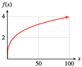

Section 3.6 Chapter Summary and Review
Subsection Key Concepts
Direct and Inverse Variation.
\(y\) varies directly with \(x\) if the ratio \(\dfrac{y}{x} \) is constant, that is, if \(y = kx.\)
\(y\) varies directly with a power of \(x\) if the ratio \(\dfrac{y}{x^n} \) is constant, that is, if \(y = kx^n\) .
\(y\) varies inversely with \(x\) if the product \(xy \) is constant, that is, if \(y =\dfrac{k}{x}\) .
\(y\) varies inversely with a power of \(x\) if the product \(x^ny \) is constant, that is, if \(y =\dfrac{k}{x^n}\) .
The graph of a direct variation passes through the origin. The graph of an inverse variation has a vertical asymptote at the origin.
If \(y = kx^n\text{,}\) we say that \(y\) scales as \(x^n\text{.}\)
\(n\)th roots: \(s\) is called an \(n\)th root of \(b\) if \(s^n = b\text{.}\)
Exponential Notation.
The absolute value has the following properties:
\begin{alignat*}{2} \amp a^{-n}=\frac{1}{x^n} \amp\hphantom{00000} \amp a\ne 0\\ \amp a^{0}=1 \amp \amp a\ne 0\\ \amp a^{1/n}=\sqrt[n]{a} \amp \amp n \text{ an integer, } n\gt 2\\ \amp a^{m/n}=(a^{1/n})^m=(a^m)^{1/n}, \amp \amp a\gt 0, ~n\ne 0 \end{alignat*}In particular, a negative exponent denotes a reciprocal, and a fractional exponent denotes a root.
\(\displaystyle a^{m/n} = \sqrt[n]{a^m} =\left(\sqrt[n]{a}\right)^m\)
To compute \(a^{m/n}\text{,}\) we can compute the \(n\)th root first, or the \(m\)th power, whichever is easier.
We cannot write down an exact decimal equivalent for an irrational number, but we can approximate an irrational number to as many decimal places as we like.
-
The laws of exponents are valid for all exponents \(m\) and \(n\text{,}\) and for \(b\ne 0\text{.}\)
Laws of Exponents.
\(\displaystyle a^m\cdot a^n=a^{m+n}\)
\(\displaystyle \dfrac{a^m}{a^n}=a^{m-n}\)
\(\displaystyle \left(a^m\right)^n=a^{mn}\)
\(\displaystyle \left(ab\right)^n=a^n b^n\)
\(\displaystyle \left(\dfrac{a}{b}\right)^n=\dfrac{a^n}{b^n} \)
A function of the form \(f (x) = kx^p\text{,}\) where \(k\) and \(p\) are constants, is called a power function.
An allometric equation is a power function of the form \(\text{variable} = k(\text{mass})^p\text{.}\)
We can solve the equation \(x^n = b\) by raising both sides to the \(\dfrac{1}{n}\) power
We can solve the equation \(x^{1/n} = b\) by raising both sides to the \(n\)th power.
To solve the equation \(x^{m/n} = k\text{,}\) we raise both sides to the power \(n/m\text{.}\)
The graphs of power functions \(y = x^{m/n}\text{,}\) where \(m/n\) is positive are all increasing for \(x\ge 0\text{.}\) If \(m/n\gt 1\text{,}\) the graph is concave up. If \(0\lt m/n \lt 1\text{,}\) the graph is concave down.
The notation \(z = f (x, y)\) indicates that \(z\) is a function of two variables, \(x\) and \(y\text{.}\)
We can use a table with rows and columns to display the output values for a function of two variables.
Joint Variation.
-
We say that \(z\) varies jointly with \(x\) and \(y\) if
\begin{equation*} z = kxy,~~~ k\ne 0 \end{equation*} -
We say that \(z\) varies directly with \(x\) and inversely with \(y\) if
\begin{equation*} z = k\dfrac{x}{y},~~~ k\ne 0, ~~ y\ne 0 \end{equation*}
-
We can represent a function of two variables graphically by showing a set of graphs for several fixed values of one of the variables.
Roots of Real Numbers.
Every positive number has two real-valued roots, one positive and one negative, if the index is even.
A negative number has no real-valued root if the index is even.
Every real number, positive, negative, or zero, has exactly one real-valued root if the index is odd.
.
Exercises Chapter 3 Review Problems
1.
The distance s a pebble falls through a thick liquid varies directly with the square of the length of time \(t\) it falls.
If the pebble falls \(28\) centimeters in \(4\) seconds, express the distance it will fall as a function of time.
Find the distance the pebble will fall in \(6\) seconds.
\(\displaystyle d = 1.75t^2\)
\(63\) cm
2.
The volume, \(V\text{,}\) of a gas varies directly with the temperature, \(T\text{,}\) and inversely with the pressure, \(P\text{,}\) of the gas.
If \(V = 40\) when \(T = 300\) and \(P = 30\text{,}\) express the volume of the gas as a function of the temperature and pressure of the gas.
Find the volume when \(T = 320\) and \(P = 40\text{.}\)
3.
The demand for bottled water is inversely proportional to the price per bottle. If Droplets can sell \(600\) bottles at $\(8\) each, how many bottles can the company sell at $\(10\) each?
\(480\) bottles
4.
The intensity of illumination from a light source varies inversely with the square of the distance from the source. If a reading lamp has an intensity of \(100\) lumens at a distance of \(3\) feet, what is its intensity \(8\) feet away?
5.
A person's weight, \(w\text{,}\) varies inversely with the square of his or her distance, \(r\text{,}\) from the center of the Earth.
Express \(w\) as a function of \(r\text{.}\) Let \(k\) stand for the constant of variation.
Make a rough graph of your function.
How far from the center of the Earth must Neil be in order to weigh one-third of his weight on the surface? The radius of the Earth is about \(3960\) miles.
\(\displaystyle w = \dfrac{k}{r^2}\)

\(3960\sqrt{3}\approx 6860\) miles
6.
The period, \(T\text{,}\) of a pendulum varies directly with the square root of its length, \(L\text{.}\)
Express \(T\) as a function of \(L\text{.}\) Let \(k\) stand for the constant of variation.
Make a rough graph of your function.
If a certain pendulum is replaced by a new one four-fifths as long as the old one, what happens to the period?
Exercise Group.
In Problems 7–10, \(y\) varies directly or inversely with a power of \(x\text{.}\) Find the power of \(x\) and the constant of variation, \(k\text{.}\) Write a formula for each function of the form \(y = kx^n\) or \(y = \dfrac{k}{x^n}\text{.}\)
7.
| \(x\) | \(y\) |
| \(2\) | \(4.8\) |
| \(5\) | \(30.0\) |
| \(8\) | \(76.8\) |
| \(11\) | \(145.2\) |
\(y = 1.2x^2\)
8.
| \(x\) | \(y\) |
| \(1.4\) | \(75.6\) |
| \(2.3\) | \(124.2\) |
| \(5.9\) | \(318.6\) |
| \(8.3\) | \(448.2\) |
9.
| \(x\) | \(y\) |
| \(0.5\) | \(40.0\) |
| \(2.0\) | \(10.0\) |
| \(4.0\) | \(5.0\) |
| \(8.0\) | \(2.5\) |
\(y =\dfrac{20}{x} \)
10.
| \(x\) | \(y\) |
| \(1.5\) | \(320.0\) |
| \(2.5\) | \(115.2\) |
| \(4.0\) | \(45.0\) |
| \(6.0\) | \(20.0\) |
Exercise Group.
For Problems 11–16, write without negative exponents and simplify.
11.
\(\displaystyle (-3)^{-4} \)
\(\displaystyle 4^{-3}\)
\(\displaystyle \dfrac{1}{81} \)
\(\displaystyle \dfrac{1}{64} \)
12.
\(\displaystyle \left(\dfrac{1}{3}\right)^{-2} \)
\(\displaystyle \dfrac{3}{5^{-2}} \)
13.
\(\displaystyle (3m)^{-5} \)
\(\displaystyle -7y^{-8}\)
\(\displaystyle \dfrac{1}{243m^5} \)
\(\displaystyle \dfrac{-7}{y^8} \)
14.
\(\displaystyle a^{-1}+ a^{-2} \)
\(\displaystyle \dfrac{3q^{-9}}{r^{-2}} \)
15.
\(\displaystyle 6c^{-7}\cdot (3)^{-1} c^4 \)
\(\displaystyle \dfrac{11z^{-7}}{3^{-2} z^{-5}}\)
\(\displaystyle \dfrac{2}{c^3} \)
\(\displaystyle \dfrac{99}{z^2} \)
16.
\(\displaystyle \left(2d^{-2}k^3 \right)^{-4} \)
\(\displaystyle \dfrac{2w^3(w^{-2})^{-3}}{5w^{-5}} \)
Exercise Group.
For Problems 17–20, write each power in radical form.
17.
\(\displaystyle 25m^{1/2} \)
\(\displaystyle 8n^{-1/3} \)
\(\displaystyle 25\sqrt{m} \)
\(\displaystyle \dfrac{8}{\sqrt[3]{n}} \)
18.
\(\displaystyle (13d)^{2/3} \)
\(\displaystyle 6x^{2/5}y^{3/5} \)
19.
\(\displaystyle (3q)^{-3/4} \)
\(\displaystyle 7(uv)^{3/2} \)
\(\displaystyle \dfrac{1}{\sqrt[4]{27q^3}} \)
\(\displaystyle 7\sqrt{u^3v^3} \)
20.
\(\displaystyle (a^2+b^2)^{0.5} \)
\(\displaystyle (16-x^2)^{0.25} \)
Exercise Group.
For Problems 21–24, write each radical as a power with a fractional exponent.
21.
\(\displaystyle 2\sqrt[3]{x^2} \)
\(\displaystyle \dfrac{1}{4}\sqrt[4]{x} \)
\(\displaystyle 2x^{2/3} \)
\(\displaystyle \dfrac{1}{4}x^{1/4} \)
22.
\(\displaystyle z^2\sqrt{z} \)
\(\displaystyle z\sqrt[3]{z} \)
23.
\(\displaystyle \dfrac{6}{\sqrt[4]{b^3}} \)
\(\displaystyle \dfrac{-1}{3\sqrt[3]{b}} \)
\(\displaystyle 6b^{-3/4} \)
\(\displaystyle \dfrac{-1}{3}b^{-1/3} \)
24.
\(\displaystyle \dfrac{-4}{(\sqrt[4]{a})^2} \)
\(\displaystyle \dfrac{2}{(\sqrt{a})^3} \)
Exercise Group.
For Problems 25–28, sketch graphs by hand for each function on the domain \((0,\infty)\text{.}\)
25.
\(y\) varies directly with \(x^2\text{.}\) The constant of variation is \(k = 0.25\text{.}\)

26.
\(y\) varies directly with \(x\text{.}\) The constant of variation is \(k = 1.5\text{.}\)
27.
\(y\) varies inversely with \(x\text{.}\) The constant of variation is \(k = 2\text{.}\)

28.
\(y\) varies inversely with \(x^2\text{.}\) The constant of variation is \(k = 4\text{.}\)
Exercise Group.
For Problems 29–30, write each function in the form \(y = kx^p\text{.}\)
29.
\(f(x)=\dfrac{2}{3x^4} \)
\(f(x)=\dfrac{2}{3}x^{-4} \)
30.
\(g(x)=\dfrac{8x^7}{29} \)
Exercise Group.
For Problems 31–34,
Evaluate each function for the given values.
Graph the function.
31.
\(Q(x)=4x^{5/2} \)
| \(x\) | \(16\) | \(\dfrac{1}{4} \) | \(3\) | \(100\) |
| \(Q(x)\) | \(\hphantom{000} \) | \(\hphantom{000} \) | \(\hphantom{000}\) | \(\hphantom{000}\) |
\(x\) \(16\) \(\dfrac{1}{4} \) \(3\) \(100\) \(Q(x)\) \(4096 \) \(\dfrac{1}{8} \) \(4\sqrt{3^5}\approx 62.35 \) \(400,000\) 
32.
\(T(w)=-3w^{2/3} \)
| \(w\) | \(27\) | \(\dfrac{1}{8} \) | \(20\) | \(1000\) |
| \(T(w) \) | \(\hphantom{000} \) | \(\hphantom{000} \) | \(\hphantom{000}\) | \(\hphantom{000}\) |
33.
\(f(x)=x^{0.3} \)
| \(x\) | \(0\) | \(1 \) | \(5\) | \(10\) | \(20\) | \(50\) | \(70\) | \(100\) |
| \(f(x)\) | \(\hphantom{000} \) | \(\hphantom{000} \) | \(\hphantom{000}\) | \(\hphantom{000} \) | \(\hphantom{000} \) | \(\hphantom{000}\) | \(\hphantom{000}\) | \(\hphantom{000}\) |
\(x\) \(0\) \(1 \) \(5\) \(10\) \(20\) \(50\) \(70\) \(100\) \(f(x)\) \(0 \) \(1 \) \(1.62\) \(2.00 \) \(2.46 \) \(3.23\) \(3.58\) \(3.98\) - 
34.
\(g(x)=-x^{-0.7} \)
| \(x\) | \(0.1\) | \(0.2 \) | \(0.5\) | \(1\) | \(2\) | \(5\) | \(8\) | \(10\) |
| \(g(x) \) | \(\hphantom{000} \) | \(\hphantom{000} \) | \(\hphantom{000}\) | \(\hphantom{000}\) | \(\hphantom{000} \) | \(\hphantom{000} \) | \(\hphantom{000}\) | \(\hphantom{000}\) |
35.
According to the theory of relativity, the mass of an object traveling at velocity \(v\) is given by the function
where \(M\) is the mass of the object at rest and \(c\) is the speed of light. Find the mass of a man traveling at a velocity of \(0.7c\) if his rest mass is \(80\) kilograms.
\(112\) kg
36.
The cylinder of smallest surface area for a given volume has a radius and height both equal to \(\sqrt[3]{\dfrac{V}{\pi}} \text{.}\) Find the dimensions of the tin can of smallest surface area with volume \(60\) cubic inches.
37.
Membership in the Wildlife Society has grown according to the function
where \(t\) is the number of years since its founding in \(1970\text{.}\)
Sketch a graph of the function \(M(t)\text{.}\)
What was the society's membership in \(1990\text{?}\)
In what year will the membership be \(810\) people?

283
2051
38.
The heron population in Saltmarsh Refuge is estimated by conservationists at
where \(t\) is the number of years since the refuge was established in \(1990\text{.}\)
Sketch a graph of the function \(P(t)\text{.}\)
How many heron were there in \(1995\text{?}\)
In what year will there be only \(40\) heron left?
39.
Manufacturers of ships (and other complex products) find that the average cost of producing a ship decreases as more of those ships are produced. This relationship is called the experience curve, given by the equation
where \(C\) is the average cost per ship in millions of dollars and \(x\) is the number of ships produced. The value of the constant \(b\) depends on the complexity of the ship. (Source: Storch, Hammon, and Bunch, 1988)
What is the significance of the constant of proportionality \(a\text{?}\)
For one kind of ship, \(b = \dfrac{1}{8}\text{,}\) and the cost of producing the first ship is $\(12\) million. Write the equation for \(C\) as a function of \(x\) using radical notation.
Compute the cost per ship when \(2\) ships have been built. By what percent does the cost per ship decrease? By what percent does the cost per ship decrease from building \(2\) ships to building \(4\) ships?
By what percent does the average cost decrease from building \(n\) ships to building \(2n\) ships? (In the shipbuilding industry, the average cost per ship usually decreases by \(5\) to \(10\%\) each time the number of ships doubles.)
40.
A population is in a period of supergrowth if its rate of growth, \(R\text{,}\) at any time is proportional to \(P^k\text{,}\) where \(P\) is the population at that time and \(k\) is a constant greater than \(1\text{.}\) Suppose \(R\) is given by
where \(P\) is measured in thousands and \(R\) is measured in thousands per year.
Find \(R\) when \(P = 20\text{,}\) when \(P = 40\text{,}\) and when \(P = 60\text{.}\)
What will the population be when its rate of growth is \(5000\) per year?
Graph \(R\) and use your graph to verify your answers to parts (a) and (b).
Exercise Group.
For Problems 41–50, solve
41.
\(6t^{-3} = \dfrac{3}{500}\)
\(t=10\)
42.
\(3.5 - 2.4p^{-2} = -6.1\)
43.
\(\sqrt[3]{x+1} = 2 \)
\(x=7\)
44.
\(x^{2/3}+2 = 6\)
45.
\((x-1)^{-3/2} = \dfrac{1}{8}\)
\(x=5\)
46.
\((2x+1)^{-1/2} =\dfrac{1}{3} \)
47.
\(8\sqrt[4]{x+6} =24 \)
\(x=75\)
48.
\(9.8 =7\sqrt[3]{z-4} \)
49.
\(\dfrac{2}{3} (2y+1)^{0.2} = 6\)
\(y=29,524\)
50.
\(1.3w^{0.3}+4.7 =5.2 \)
Exercise Group.
For Problems 51–54, solve each formula for the indicated variable.
Exercise Group.
For Problems 55–60, simplify by applying the laws of exponents.
61.
When the Concorde landed at Heathrow Airport in London, the width, \(w\text{,}\) of the sonic boom felt on the ground is given in kilometers by the following formula:
where \(T\) stands for the temperature on the ground in kelvins, \(h\) is the altitude of the Concorde when it breaks the sound barrier, and \(m\) is the drop in temperature for each gain in altitude of one kilometer.
Find the width of the sonic boom if the ground temperature was \(293\) K, the altitude of the Concorde was \(15\) kilometers, and the temperature drop was \(4\) K per kilometer of altitude.
Graph \(w\) as a function of \(h\) if \(T = 293\) and \(m = 4\text{.}\)
\(132.6\) km

62.
The manager of an office supply store must decide how many of each item in stock she should order. The Wilson lot size formula gives the most cost-efficient quantity, \(Q\text{,}\) as a function of the cost, \(C\text{,}\) of placing an order, the number of items, \(N\text{,}\) sold per week, and the weekly inventory cost, \(I\text{,}\) per item (cost of storage, maintenance, and so on).
How many reams of computer paper should she order if she sells on average \(80\) reams per week, the weekly inventory cost for a ream is $\(0.20\text{,}\) and the cost of ordering, including delivery charges, is $\(25\text{?}\)
Graph \(Q\) as a function of \(N\) if \(C = 25\) and \(I = 0.2\text{.}\)
63.
Two businesswomen start a small company to produce saddle bags for bicycles. The number of saddle bags, \(q\text{,}\) they can produce depends on the amount of money, \(m\text{,}\) they invest and the number of hours of labor, \(w\text{,}\) they employ, according to the Cobb-Douglas formula
where \(m\) is measured in thousands of dollars.
If the businesswomen invest $\(100,000\) and employ \(1600\) hours of labor in their first month of production, how many saddle bags can they expect to produce?
With the same initial investment, how many hours of labor would they need in order to produce \(200\) saddle bags?
\(\displaystyle 480\)
\(\displaystyle 498\)
64.
A child who weighs \(w\) pounds and is \(h\) inches tall has a surface area (in square inches) given approximately by
What is the surface area of a child who weighs \(60\) pounds and is \(40\) inches tall?
What is the weight of a child who is \(50\) inches tall and whose surface area is \(397\) square inches?
65.
The cost, \(C\text{,}\) of insulating the ceiling in a building depends on the thickness of the insulation and the area of the ceiling. The table shows values of \(C = f (t, A)\text{,}\) where \(t\) is the thickness of the insulation and \(A\) is the area of the ceiling.
| Cost of Insulation (dollars) | ||||||
| Area (sq m) | ||||||
| Thickness (cm) |
\(100\) | \(200\) | \(300\) | \(400\) | \(500\) | \(600\) |
| \(4\) | \(72\) | \(144\) | \(216\) | \(288\) | \(300\) | \(432\) |
| \(5\) | \(90\) | \(180\) | \(270\) | \(360\) | \(450\) | \(540\) |
| \(6\) | \(108\) | \(216\) | \(324\) | \(432\) | \(540\) | \(648\) |
| \(7\) | \(126\) | \(252\) | \(378\) | \(504\) | \(630\) | \(756\) |
| \(8\) | \(144\) | \(288\) | \(432\) | \(576\) | \(720\) | \(864\) |
| \(9\) | \(162\) | \(324\) | \(486\) | \(648\) | \(810\) | \(972\) |
What does it cost to insulate a ceiling with an area of \(500\) square meters with \(5\) cm of insulation? Write your answer in function notation.
Solve the equation \(864 = f (t, 600)\) and interpret your answer.
Consider the row corresponding to a thickness of \(4\) cm. How does the cost of insulating the ceiling depend on the area of the ceiling?
Consider the column corresponding to an area of \(100\) square meters. How does the cost depend on the thickness of the insulation?
Given that the cost varies jointly with the thickness of the insulation and the area of the ceiling, write an equation for cost as a function of area and thickness of insulation.
Use your formula from part (e) to determine the cost of insulating a building with \(10\) centimeters of insulation if the area of the ceiling is \(800\) square meters.
$\(450\)
\(t = 8\text{:}\) It costs $\(864\) to insulate a ceiling with \(8\) cm of insulation over an area of \(600\) square meters.
\(\displaystyle C = 0.72A\)
\(\displaystyle C = 18T\)
\(\displaystyle C = 0.18AT\)
$\(1440\)
66.
The volume, \(V\text{,}\) of a quantity of helium depends on both the temperature and the pressure of the gas. The table shows values of \(V = f (P, T )\) for temperature in kelvins and pressure in atmospheres.
| Volume (cubic meters) | ||||||
| Temperature (K) | ||||||
| Pressure (atmospheres) |
\(100\) | \(150\) | \(200\) | \(250\) | \(300\) | \(350\) |
| \(1\) | \(18\) | \(27\) | \(36\) | \(45\) | \(54\) | \(63\) |
| \(2\) | \(9\) | \(13.5\) | \(18\) | \(22.5\) | \(27\) | \(31.5\) |
| \(3\) | \(6\) | \(9\) | \(12\) | \(15\) | \(18\) | \(21\) |
| \(4\) | \(4.5\) | \(6.75\) | \(9\) | \(11.25\) | \(13.5\) | \(15.75\) |
What is the volume of helium when the pressure is \(4\) atmospheres and the temperature is \(350\) K? Write your answer in function notation.
Solve the equation \(15 = f (3, T )\) and interpret your answer.
Consider the row corresponding to \(2\) atmospheres. How is the volume related to the absolute temperature?
Consider the column corresponding to \(300\) K. How is the volume related to the pressure?
Given that the volume of the gas varies directly with temperature and inversely with pressure, write an equation for volume as a function of temperature and pressure.
Use your formula from part (e) to determine the volume of the helium at \(50\) K and pressure of \(0.4\) atmospheres.
67.
In his hiking guidebook, Afoot and Afield in Los Angeles County, Jerry Schad notes that the number of people on a wilderness trail is inversely proportional to "the square of the distance and the cube of the elevation gain from the nearest road."
Choose variables and write a formula for this relationship.
-
On a sunny Saturday afternoon, you count \(42\) people enjoying the Rock Pool at Malibu Creek State Park. The Rock Pool is \(1.5\) miles from the main parking lot, and the trail includes an elevation gain of \(250\) feet. Calculate the constant of variation in your formula from part (a).
Hint: Convert the elevation gain to miles.
Lookout Trail leads \(1.9\) miles from the parking lot and involves an elevation gain of \(500\) feet. How many people would you expect to encounter at the end of the trail?
\(N =\dfrac{k}{d^2E^3}\text{,}\) where \(N\) is number of people, \(d\) is distance in miles from the road, \(E\) is the elevation gain, and \(k\) is the constant of variation.
\(\displaystyle k\approx 0.01 \)
\(\displaystyle 3\)
68.
A company's monthly production, \(P\text{,}\) depends on the capital, \(C\text{,}\) the company has invested and the amount of labor, \(L\text{,}\) available each month. The Cobb-Douglas model for production assumes that \(P\) varies jointly with \(C^a\) and \(L^b\text{,}\) where \(a\) and \(b\) are positive constants less than \(1\text{.}\) The Aztech Chip Company invested \(625\) units of capital and hired \(256\) workers and produces \(8000\) computer chips each month.
Suppose that \(a = 0.25\text{,}\) \(b = 0.75\text{.}\) Find the constant of variation and a formula giving \(P\) in terms of \(C\) and \(L\text{.}\)
If Aztech increases its labor force to \(300\) workers, what production level can they expect?
If Aztech maintains its labor force at \(256\) workers, what amount of capital outlay would be required for monthly production to reach \(16,000\) computer chips?